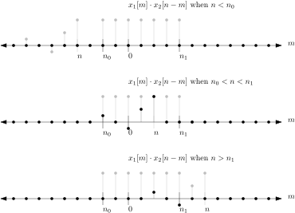

9 DT Convolution
9.1 Review DT LTI systems and superposition property
Recall the superposition property of LTI systems. If a DT system is LTI then the superposition property holds. Given a system where \[x_i[n] \mapsto y_i[n] \; \forall\; i\] then \[\sum\limits_{i} a_i x_i[n] \mapsto \sum\limits_{i} a_i y_i[n]\]
As in CT we can use superposition to enable a problem reduction strategy in DT systems, where we write the input as a weighted sum of simple signals. In this lecture, the simple signals are weighted, time shifts of one signal, the DT delta function, \(\delta[n]\).
9.2 Convolution Sum
To derive this we start with the sifting property of the DT impulse function (from lecture 3) \[\sum\limits_{a}^{b} x[n]\delta[n-n_0] = x[n_0]\] for any \(a < n_0 < b\). A slight change of variables (\(n_0 \rightarrow m\)) and limits (\(a \rightarrow -\infty\) and \(b \rightarrow \infty\)) gives: \[x[n] = \sum\limits_{m = -\infty}^{\infty} x[m]\delta[n-m]\] showing that we can write any DT signal as an infinite sum of weighted and time-shifted impluse functions.
Let \(h[n]\) be the DT impulse response, the output due to the input \(\delta[n]\), i.e. \(\delta[n] \mapsto h[n]\). Then if the system is time-invariant: \(\delta[n-m] \mapsto h[n-m]\) and by superposition, if the input is writen as \[x[n] = \sum\limits_{m = -\infty}^{\infty} x[m]\delta[n-m]\] then the output is given by \[y[n] = \sum\limits_{m = -\infty}^{\infty} x[m]h[n-m] = x[n] * h[n]\] This is called the convolution sum .
The significance is similar to that in CT convolution. For a LTI DT system, if I know its impulse response \(h[n]\), I can find the response due to any input using convolution. For this reason the impulse response is another way to represent an LTI system.
9.3 Graphical View of the Convolution Sum.
As in CT, let us break the convolution expression down into pieces. In its general form the convolution of two signals \(x_1[n]\) and \(x_2[n]\) is \[x_1[n] * x_2[n] = \sum\limits_{m = -\infty}^{\infty} x_1[m]x_2[n-m]\]
Suppose \(x_1[n]\) and \(x_2[n]\) are signals that look like
Then \(x_1[m]\) and \(x_2[-m]\) look like
The signal \(x_2[n-m]\) is \(x_2[-m]\) shifted by \(n\) (since \(x_2[-m+n]= x_s[n-m]\)) and looks like
Then the terms of the convolution sum is the product \(x_1[m]x_2[n-m]\) whose plot depends of the value of \(n\). Some examples, where the individual signals are in grey and their product is in bold:

Then convolution is the total sum of the product (bold plots above) for that value of \(n\). For the example above we see the sum will be zero for \(n\) less than \(n_0\) since the two signals do not overlap and their product is zero. For \(n_0 \leq n \leq n_1\) the signals overap and the product is non-zero, and the effective bounds of summation are \([n_0,n]\). For \(n > n_1\) the signals again overap and the product is non-zero, but the effective bounds of summation are \([n_0,n_1]\).
9.4 DT Convolution of Finite-Length Signals
For finite-length signals, DT convolution gives us an algorithm to determine their convolution. Suppose the signal \(x_1\) is non-zero only over the interval \([N_1,M_1]\), and the signal \(x_2\) is non-zero only over the interval \([N_2,M_2]\). The length of the signals are \(L_1 = M_1-N_1+1\) and \(L_2 = M_2-N_2+1\) respectively. The non-zero terms of the convolution sum (when the signals overlap) is then the range \([N_1+N_2,M_1+M_2]\) and the sum can be truncated as:
\[x_1[n] * x_2[n] = \sum\limits_{m = N_1+N_2}^{M_1+M_2} x_1[m]x_2[n-m]\]
It is common to shift both signals so that they both start at index \(0\) (in order to be represented as arrays in a zero-based index programming language like C or C++), zero-padding them both to have length \(L=L_1+L_2-1\) (zero-pad means to just add zero values to the end of the sequence). Then the convolution becomes \[y = x_1 * x_2 = \sum\limits_{m = 0}^{L-1} x_1[m]x_2[n-m]\] where the indexing of \(x_2\) is modulo the signal length, i.e. \(x_2[(n-m) \mbox{ mod } L]\). The resulting signal after convolution, \(y\), is also of length \(L\), and can then be shifted back to start at \(N_1+N_2\).
Example
The following C++ code computes the convolution of the DT signals \(\{1,-1,1\}\) and \(\{1,1,1,1\}\).
const unsigned int L = 6;
double x1[L] = {1., -1., 1., 0, 0, 0};
double x2[L] = {1., 1., 1., 1., 0, 0};
double y[L];
for(int n = 0; n < L; n++){
double sum = 0.;
for(int m = 0; m < L; m++){
int idx = (L+n-m) % L;
sum += x1[m]*x2[idx];
}
y[n] = sum;
}Note that \(L_1 = 3\), \(L_2 = 4\), so that \(L=6\).
An interesting aside, convolution of finite length signals is equivalent to multiplication of two polynomials, where the signal values are the coefficients.
9.5 Examples of DT Convolution
Example
Consider the convolution of two unit step functions: \[u[n] * u[n] = \sum\limits_{m = -\infty}^{\infty} u[m]u[n-m]\] Note for \(n < 0\) the product of the signals \(u[m]\) and \(u[n-m]\) is zero as shown in the following figure
so that the resulting sum is zero for any \(n < 0\). For \(n \geq 0\) the signals \(u[m]\) and \(u[n-m]\) overlap from \(0\) to \(n\) as shown below
and the convolution sum is \[\sum\limits_{m = 0}^{n} 1 = (n+1)\] so that \[u[n] * u[n] = \left\{ \begin{array}{lc} 0 & n < 0\\ n+1 & n \geq 0 \end{array} \right.\] Putting the piecewise result into a single expression gives \[u[n] * u[n] = (n+1)u[n]\]
Example
Consider the convolution of a unit step and the function \(\gamma^n\,u[n]\) for some constant \(\gamma \neq 1\): \[\gamma^n\, u[n] * u[n] = \sum\limits_{m = -\infty}^{\infty} \gamma^{m}u[m]u[n-m]\] Since both signals are multiplied by a step, the product of \(\gamma^{m}u[m]u[n-m]\) is non-zero only for \(0 \leq m \leq n\) (for the same reason as in the previous example). Thus for \(n \geq 0\) the convolution sum is: \[\sum\limits_{m = 0}^{n} \gamma^{m} = \frac{\gamma^{n+1}-1}{\gamma-1} = \frac{1-\gamma^{n+1}}{1-\gamma}\] Putting the two piecewise results together gives \[\gamma^n\, u[n] * u[n] = \frac{1-\gamma^{n+1}}{1-\gamma}\,u[n]\]
Example
Consider the convolution of an arbitrary signal \(x[n]\) with the impulse function \[x[n] * \delta[n] = \sum\limits_{m = -\infty}^{\infty} x[m]\delta[n-m]\] By the sifting property we get \[\sum\limits_{m = -\infty}^{\infty} x[m]\delta[n-m] = x[n]\] Thus the convolution with the impulse gives back the same signal (the \(\delta\) is the identity system).
Table [table:dtconv] lists several DT convolution results.
9.6 Properties of DT Convolution
There are several useful properties of convolution. We do not prove these here, but it is not terribly difficult to do so. Given signals \(x_1[n]\), \(x_2[n]\), and \(x_3[n]\):
- Commutative Property
-
The ordering of the signals does not matter. \[x_1[n] * x_2[n] = x_2[n] * x_1[n]\]
- Distributive Propery
-
Convolution is distributed over addition. \[x_1[n] * \left(x_2[n] + x_3[n]\right) = \left(x_1[n] * x_2[n] \right) + \left(x_1[n] * x_3[n] \right)\]
- Associative Property
-
The order of convolution does not matter. \[x_1[n] * \left(x_2[n] * x_3[n]\right) = \left(x_1[n] * x_2[n] \right) * x_3[n]\]
- Index Shift
-
Given \(x_3[n] = x_1[n] * x_2[n]\) then for index shifts \(m_1, m_2 \in \mathbb{R}\) \[x_1[n-m_1] * x_2[n-m_2] = x_3[n-m_1 - m_2]\]
- Multiplicative Scaling
-
Given \(x_3[n] = x_1[n] * x_2[n]\) then for constants \(a,b \in \mathbb{C}\) \[\left(a\, x_1[n]\right) * \left(b\, x_2[n]\right) = a\, b\, x_3[n]\]
These properties can be used in combination with a table like that above to compute the convolution of a wide variety of signals without evaluating the summations.
Example
Consider the convolution of the causal DT pulse of length \(N\), \(x_1[n] = u[n] - u[n-N]\), and the signal \(x_2[n] = \left( \frac{1}{2}\right)^nu[n]\).
$$ \[\begin{aligned} x_1[n] * x_2[n] &= \left( u[n] - u[n-N]\right) * \left( \left( \frac{1}{2}\right)^nu[n] \right)\\ &= \left( u[n] \right) * \left( \left( \frac{1}{2}\right)^nu[n] \right) - \left( u[n-N]\right) * \left( \left( \frac{1}{2}\right)^nu[n] \right) \mbox{ using distributive property}\\ &= \frac{1-\left(\frac{1}{2}\right)^{n+1}}{1-\left(\frac{1}{2}\right)}u[n] - \frac{1-\left(\frac{1}{2}\right)^{n+1}}{1-\left(\frac{1}{2}\right)}u[n] \Big|_{n\rightarrow n-N} \mbox{ from Table row 2 and index shift property}\\ &= \frac{1-\left(\frac{1}{2}\right)^{n+1}}{\left(\frac{1}{2}\right)}u[n] - \frac{1-\left(\frac{1}{2}\right)^{n-N+1}}{\left(\frac{1}{2}\right)}u[n-N]\\ &= \frac{1-\left(\frac{1}{2}\right)^{n+1}}{\left(\frac{1}{2}\right)}u[n] - \frac{1-\left(\frac{1}{2}\right)^{-N}\left(\frac{1}{2}\right)^{n+1}}{\left(\frac{1}{2}\right)}u[n-N]\\ &= 2\left(1-\left(\frac{1}{2}\right)^{n+1}\right)u[n] - 2\left(1-\left(\frac{1}{2}\right)^{-N}\left(\frac{1}{2}\right)^{n+1} \right)u[n-N]\\ &= \left(2-\left(\frac{1}{2}\right)^{n}\right)u[n] - \left(2-\left(\frac{1}{2}\right)^{-N}\left(\frac{1}{2}\right)^{n} \right)u[n-N] \end{aligned}\]